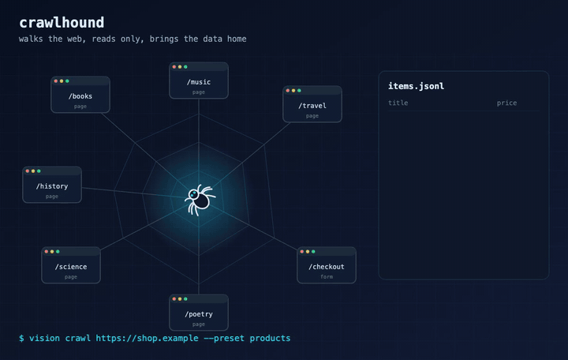

2 स्किल
एजेंट इंजीनियरिंग
स्किल और वर्कफ़्लो जिन्हें एजेंट लोड करके फ़ॉलो करते हैं, Claude Code प्लगइन और GitHub Action के रूप में पैकेज्ड।
डेवलपमेंट · AI एजेंट, ऑटोमेशन, SaaS
मैं Claude Code के लिए एजेंट स्किल और वर्कफ़्लो डिज़ाइन करता हूँ, evals से उन्हें मापता हूँ, रिलीज़ के लिए मज़बूत बनाता हूँ और शुरू से अंत तक डिलीवर करता हूँ।
2 स्किल
स्किल और वर्कफ़्लो जिन्हें एजेंट लोड करके फ़ॉलो करते हैं, Claude Code प्लगइन और GitHub Action के रूप में पैकेज्ड।
96% बनाम 50%
दावों से पहले evals। 11 स्टेटस टेस्ट पर adhd-status का स्कोर 96% है; उसके बिना वही मॉडल 50% लाता है। यह हर स्टेटस पर खर्च भी 35% घटाता है।
7.4 स्कोरकार्ड
हर रिपॉज़िटरी पर साइन्ड और वेरिफ़ाई की जा सकने वाली रिलीज़ और OpenSSF Scorecard। मेरा अपना एजेंट सेटअप हर टूल कॉल को चलाने से पहले सुरक्षा नीति से जाँचता है।
100/100
आइडिया से लॉन्च तक: डॉक्स, CI, रिलीज़ और दो लाइव गेम जो कोई भी अभी खेल सकता है।
एजेंट स्किल · Claude Code
एजेंट के ढेर सारे आउटपुट से निकलता है बस एक अगला कदम।
STATUS कहिए और एजेंट पूरे सेशन को खँगालकर भूली हुई बातें पकड़ता है, फिर एक छोटी तालिका और एक ऐसे ऐक्शन के साथ जवाब देता है जिसे आप तुरंत चला सकें।
एजेंट स्किल · Claude Code
भरी डिस्क खाली, और कुछ भी नहीं खोया।
यह पहले मापता है, फिर डिस्क भरने वाली चीज़ों को रैंक करता है और हर एक पर सीधा जवाब देता है: "ज़रूरत है?"। फिर आपको एक बार में एक कदम देता है। आपकी मंज़ूरी के बिना कुछ भी डिलीट नहीं होता।

एजेंट स्किल · GitHub Action
स्किल लिखिए। सही तरीके से लॉन्च कीजिए।
स्कैफ़ोल्ड, लिंट, evals, साइन्ड रिलीज़ और लॉन्च। इसकी रेडिनेस जाँच किसी भी स्किल रिपॉज़िटरी को 21 पॉइंट पर परखती है और GitHub Action के रूप में CI में चलती है।
एजेंट स्किल · GitHub Action
आपकी रिपॉज़िटरी, एक ऐसे पोर्टफ़ोलियो में बदली हुई जो सर्च में ऊपर आता है।
यह आपकी सार्वजनिक GitHub रिपॉज़िटरी पढ़ता है, सिर्फ़ असली तथ्यों से आपके साथ पेज लिखता है, और आपकी मंज़ूरी के बाद उसे GitHub Pages पर प्रकाशित करता है: SEO, 10 भाषाएँ, 8 थीम, टाइपो झेलने वाली खोज, कोई ट्रैकर नहीं।

एजेंट स्किल · GitHub Action
आपने बनाया। नाम सिर्फ़ आपका।
यह हर वह जगह ढूँढता है जहाँ किसी AI टूल ने आपके काम पर अपना नाम डाला: आपकी रिपॉज़िटरी, GitHub खाता और AI टूल की सेटिंग्स। आपकी हाँ पर हर एक को बंद करता है और एक hook लगाता है जो नया AI श्रेय रोकता है। साथ में एक GitHub Action भी, जो ऐसा श्रेय वाले pull request को फ़ेल कर देता है।

एजेंट स्किल · Claude Code
डेटा चुनें। साफ़ पाएं। कुछ भी न बदलें।
Claude Code के लिए केवल-पढ़ने वाला डेटा क्रॉलर। एक प्रीसेट (टेक्स्ट, टेबल, लिंक, कीमतें, उत्पाद, लेख) चुनें या एक स्कीमा लिखें, और यह साइट पर चलता है, सिंगल-पेज ऐप की अवस्थाओं को मैप करता है और साफ़ रिकॉर्ड लौटाता है। यह robots.txt का पालन करता है, हर अनुरोध के बीच एक सेकंड रुकता है और हर लेखन को रोकता है।

एजेंट स्किल · GitHub Action
वह कहता है हो गया। Truly Done जाँचता है।
Claude Code के लिए एक स्किल जो साबित करती है कि बदलाव चलते हुए ऐप में काम करता है। यह आपका अपना ऐप हेडलेस Chrome में खोलती है, उपयोगकर्ता की तरह क्लिक और टाइप करती है, और असली पेज पर हर दावे की जाँच करती है: पास, फेल या कहा नहीं जा सकता, स्क्रीनशॉट के साथ। यह केवल आपकी मशीन पर चलती है: कोई टेलीमेट्री नहीं, कोई क्लाउड नहीं, कोई खाता नहीं।

एजेंट स्किल · GitHub Action
कॉम्पैक्ट से पहले अपने टोकन जानें।
Claude Code के लिए लाइव, केवल-पढ़ने वाला टोकन मीटर: हर सत्र का संदर्भ कितना भरा है, ऑटो-कॉम्पैक्ट से पहले कितने टर्न बचे हैं, ठंडे कैश की चेतावनी, और वे MCP सर्वर व स्किल जिन्हें आप कभी नहीं बुलाते। सलाह मोड बताता है क्या काटें और क्या सुधारें: कॉम्पैक्ट, नई शुरुआत, छँटाई, अलग मॉडल पर योजना और निर्माण, लोकल मॉडल, नई स्किल। यह ऑफ़लाइन चलता है: कोई टेलीमेट्री नहीं, कोई हुक नहीं, सेटिंग में कोई बदलाव नहीं।
v0.5.0 में नया: हर CLAUDE.md, नियम और स्किल हेडर हर कॉल पर कितना खर्च करता है, एक स्टेटस लाइन मीटर, और हर कटौती से बचने वाले टोकन।

क्रिएटिविटी · प्लग-इन डेवलपमेंट
जो पहले से काम करता है, उसी पर आगे बनाइए।
मज़ेदार प्रयोग, लेकिन तरीका गंभीर: जो प्रोडक्ट पहले से अच्छा चल रहा है उसमें कमी ढूँढें और एक छोटे, टेस्ट किए हुए प्लग-इन से वह फ़ीचर जोड़ दें। यहाँ: LinkedIn मैसेज जो खुद-ब-खुद 💬💣💨 में बदलकर मिट जाते हैं। यही तरीका आपकी टीम के किसी भी टूल पर काम करता है: CRM, ERP, सपोर्ट डेस्क, इंटरनल पोर्टल।
RANSA
हेल्प-डेस्क टिकटिंग सिस्टम, ताकि हर अनुरोध दर्ज हो, किसी को सौंपा जाए और समय पर बंद हो।
AS400 बिलिंग
AS400 पर चलने वाले बिलिंग सिस्टम के विज़ुअल फ़्रंट एंड को स्थिर किया और उसकी टेस्टिंग की।
Gestiona
क्लाइंट और सप्लायर का मास्टर डेटा तैयार किया, ताकि सेल्स और परचेज़ एक ही स्रोत से काम करें।
प्रॉपर्टी सेवाएँ
प्रॉपर्टी मैनेजमेंट सेवाओं के कोटेशन, जो एक कॉल या प्रॉपर्टी विश्लेषण से तैयार होते हैं।
ICC
एक मॉड्यूलर साइट, जिसे टीम बिना डेवलपर के पेज-दर-पेज बढ़ा सकती है।
ऑटोमेशन
स्प्रेडशीट रूटीन और कॉपी-पेस्ट के कदम, जाँचों के साथ शेड्यूल्ड वर्कफ़्लो में बदले, ताकि लोग मशीन का काम करना छोड़ दें।
डेटा
अकाउंटिंग, पेरोल, CRM और ग्रांट डेटा एक ही डेटा लेक में, और डैशबोर्ड किसी टेम्पलेट से नहीं, आपके सवालों के हिसाब से बने।
सॉफ़्टवेयर
छोटे वेब ऐप और AI एजेंट, शुरू से अंत तक बने, टेस्ट, CI और साइन्ड रिलीज़ के साथ।
सफ़ाई
डुप्लीकेट टूल, डेटा की प्रतियाँ और एक्सेस की खामियाँ हटाई गईं, ताकि भुगतान कम हो और सेंध लगने की जगह भी कम।
16h → 3h
कई प्रोग्राम वाली एक नॉन-प्रॉफ़िट संस्था में पेरोल एलोकेशन प्लानिंग, ग्रांट-बैलेंस जाँच के साथ ऑटोमेटेड।
−70%
Ransa में मेरा डिज़ाइन किया क्रॉस-फ़ंक्शनल टिकटिंग सिस्टम; रखरखाव लागत लगभग 20% घटी।
−30%
Gestiona365 में नए सिरे से बनाई गई पेमेंट प्रक्रिया और Excel पर CRM व कोटेशन टूल।
96% बनाम 50%
मेरा ओपन-सोर्स एजेंट स्किल adhd-status 11 स्टेटस टेस्ट पर 96% स्कोर करता है; उसके बिना वही मॉडल 50% लाता है।
Python · SQL · Power BI · Tableau · Excel · JavaScript · GitHub Actions · Claude Code · Codex · Cloudflare
हायरिंग
AI एजेंट, डेवलपर टूल और ऑटोमेशन में फ़ुल-टाइम या कॉन्ट्रैक्ट रोल, रिमोट या Vermont, USA से।
कंसल्टिंग
मैं देखता हूँ कि आपकी टीम कोडिंग एजेंट कैसे इस्तेमाल करती है, मापता हूँ कि समय और खर्च कहाँ जाता है, और एक छोटी, प्राथमिकता-क्रम वाली सुधार सूची सौंपता हूँ।
कंसल्टिंग
आपके वर्कफ़्लो के लिए बने एजेंट स्किल, evals, साइन्ड रिलीज़ और सुरक्षा जाँचों के साथ, ताकि आपकी टीम उन्हें तुरंत इंस्टॉल कर सके।
बताइए आपके एजेंट को क्या करना चाहिए। मैं बताऊँगा कि मैं उसे कैसे बनाऊँगा, टेस्ट करूँगा और साबित करूँगा कि वह काम करता है।